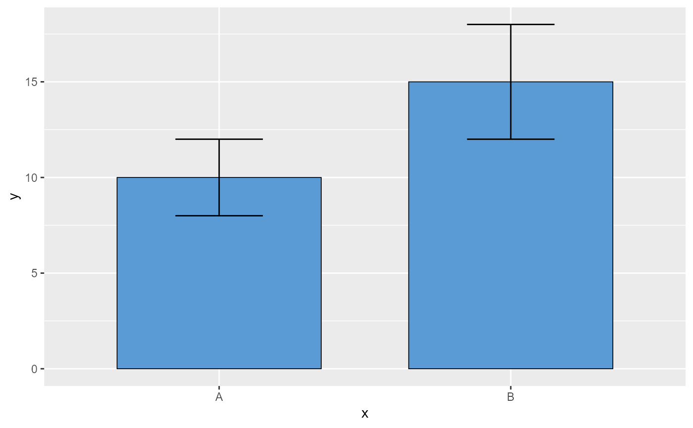

A wrapper around geom_errorbar with defaults
tuned to match GraphPad Prism's T-bar error bar appearance
(wider cap width and consistent line weight).
Arguments
- mapping
Set of aesthetic mappings created by
ggplot2::aes().- data
The data to be displayed in this layer.
- width
Width of the error bar cap in native data units (default 0.3).
- linewidth
Line width in mm (default 0.5).
- ...
Other arguments passed to
geom_errorbar.
Examples
library(ggplot2)
df <- data.frame(x = c("A", "B"), y = c(10, 15), sd = c(2, 3))
ggplot(df, aes(x, y)) +
geom_col_prism(fill = "#5B9BD5") +
geom_errorbar_prism(aes(ymin = y - sd, ymax = y + sd))
